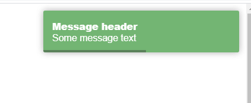

Створення нотифікацій.
1. Створіть у окремому js-файлі display-message.js функцію displayMessage(type, title, message, time) яка відображатиме на сторінці повідомлення. Ця функція повинна працювати на будь-якій сторінці де підключено цей файл.
2. Підготуйте 4 види повідомлення: success, info, warning, error;

3. Додайте ліню яка показуватиме через скільки часу повідомлення зникне.